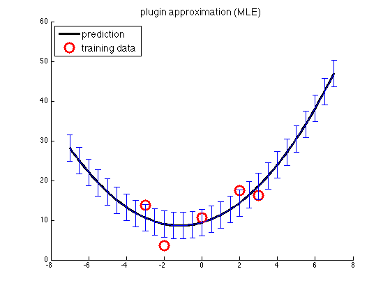
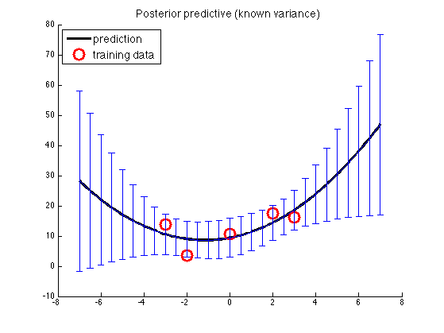
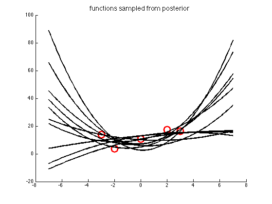
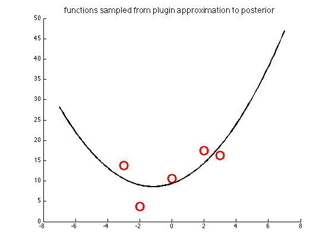

Posterior predictive density for Bayesian linear Regression in 1d with Polynomial Basis
We use a gaussian prior with fixed noise variance We plot the posterior predictive density, and samples from it
Contents
% This file is from pmtk3.googlecode.com setSeed(1); [xtrain, ytrain, xtest, ytestNoisefree, ytest, sigma2] = ... polyDataMake('sampling', 'sparse', 'deg', 2); deg = 2; addOnes = false; Xtrain = degexpand(xtrain, deg, addOnes); Xtest = degexpand(xtest, deg, addOnes); fs = 14;
MLE
modelMLE = linregFit(Xtrain, ytrain); [mu, v] = linregPredict(modelMLE, Xtest); fig1=figure; hold on; plot(xtest, mu, 'k-', 'linewidth', 3, 'displayname', 'prediction'); %plot(xtest, ytestNoisefree, 'b:', 'linewidth', 3, 'displayname', 'truth'); plot(xtrain,ytrain,'ro','markersize', 14, 'linewidth', 3, ... 'displayname', 'training data'); NN = length(xtest); ndx = 1:5:NN; % plot subset of errorbars to reduce clutter sigma = sqrt(v); h=legend('location', 'northwest'); set(h, 'fontsize', fs); errorbar(xtest(ndx), mu(ndx), sigma(ndx)); title('plugin approximation (MLE)', 'fontsize', fs); printPmtkFigure('linregPostPredPlugin')
Bayes
model = linregFitBayes(Xtrain, ytrain, ... 'prior', 'gauss', 'alpha', 0.001, 'beta', 1/sigma2); [mu, v] = linregPredictBayes(model, Xtest); fig2=figure; hold on; plot(xtest, mu, 'k-', 'linewidth', 3, 'displayname', 'prediction'); %plot(xtest, ytestNoisefree, 'b:', 'linewidth', 3, 'displayname', 'truth'); plot(xtrain,ytrain, 'ro', 'markersize', 14, 'linewidth', 3, ... 'displayname', 'training data'); NN = length(xtest); ndx = 1:5:NN; % plot subset of errorbars to reduce clutter sigma = sqrt(v); h=legend('location', 'northwest'); set(h,'fontsize', fs); errorbar(xtest(ndx), mu(ndx), sigma(ndx)); title('Posterior predictive (known variance)', 'fontsize', fs); printPmtkFigure('linregPostPredBayes')
Plot samples from posterior predictive
S = 10; ws = gaussSample(struct('mu', model.wN, 'Sigma', model.VN), S); figure; hold on; plot(xtrain,ytrain, 'ro', 'markersize', 14, 'linewidth', 3, ... 'displayname', 'training data'); for s=1:S tmp = modelMLE; tmp.w = ws(s,:)'; [mu] = linregPredict(tmp, Xtest); plot(xtest, mu, 'k-', 'linewidth', 2); end title('functions sampled from posterior', 'fontsize', fs) printPmtkFigure('linregPostPredSamples')
Plot samples from plug posterior predictive
S = 10; figure; hold on; plot(xtrain,ytrain, 'ro', 'markersize', 14, 'linewidth', 3, ... 'displayname', 'training data'); for s=1:S [mu] = linregPredict(modelMLE, Xtest); plot(xtest, mu, 'k-', 'linewidth', 2); end title('functions sampled from plugin approximation to posterior', 'fontsize', fs) printPmtkFigure('linregPostPredSamplesPlugin')